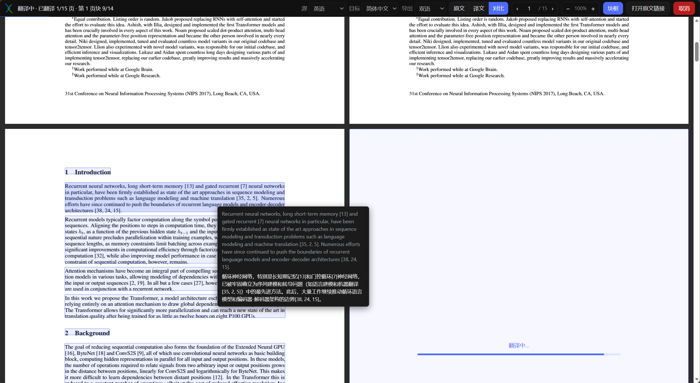
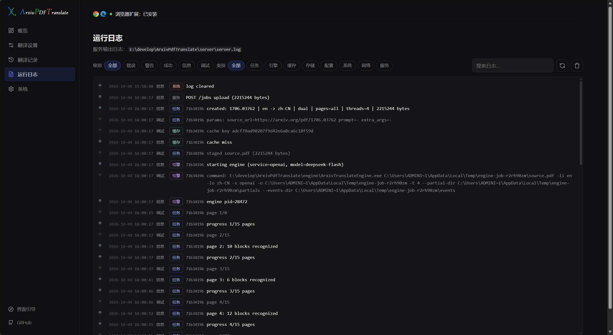
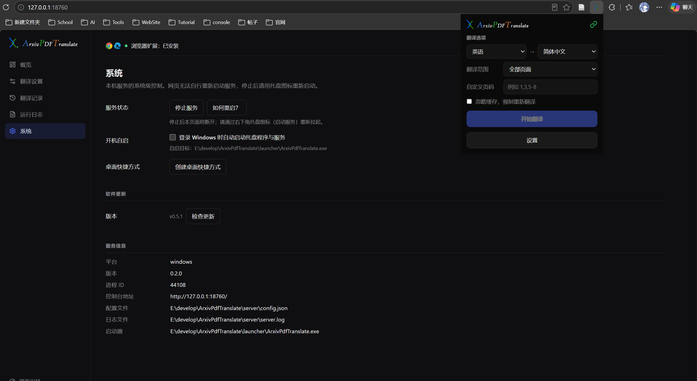

在浏览器里翻译 arXiv 论文
翻 arXiv 论文 PDF 与本地 PDF，左右对照、逐页实时生成译文。全程在本机完成——译文不经过任何云端，只调用你自己配置的翻译模型。

$ ArxivPdfTranslate.exe --server
[INFO] project root E:\arxiv-pdf-translate
[INFO] engine engine/ArxivTranslateEngine.exe
[INFO] listening on http://127.0.0.1:18760
[INFO] translate arxiv.org/pdf/2501.00001 en → zh-CN
[DONE] 68/68 pages ▸ bilingual PDF ready
[INFO] project root E:\arxiv-pdf-translate
[INFO] engine engine/ArxivTranslateEngine.exe
[INFO] listening on http://127.0.0.1:18760
[INFO] translate arxiv.org/pdf/2501.00001 en → zh-CN
[DONE] 68/68 pages ▸ bilingual PDF ready
原文 / 译文 / 对比 切换视图 · 块框 段落级溯源 · Ctrl + 滚轮 缩放



核心特点
- 左右对照 — 左侧立即显示原文全篇，右侧按页铺好占位页，每页译完原地替换，版面稳定不抖动。
- 全程本机 — 扩展取回 PDF、本机引擎解析翻译，只调用你配置的模型 API，其余数据不出本机。
- 段落块框 — 工具栏「块框」在原文页叠加每个段落块的矩形，悬停显示「原文 → 译文」，逐段核对。
- 缓存与记录 — 相同 PDF 与参数再次翻译直接命中本地缓存；记录带首页缩略图、自动标题、搜索与分组。
- 统一控制台 — 模型接口、语言、线程、缓存记录、结构化日志、开机自启与软件更新集中在 127.0.0.1:18760。
- 托盘自启 — 原生 Win32 单文件托盘程序，无 .NET / VC 运行库依赖；双击即启动服务并打开控制台。
下载
- Windows 安装包 — 双击向导安装，开箱即用。前往 Releases →
- 安装并启动本机服务 下载并运行
ArxivPdfTranslate-Setup-vX.exe（内置翻译引擎）。 - 加载浏览器扩展 打开
chrome://extensions→ 开发者模式 → 加载已解压的扩展程序 → 选择项目目录arxiv-pdf-translate/。 - 配置模型并翻译 在控制台「翻译设置 → 模型接口」填写模型名称与 API 密钥并保存；打开 arXiv PDF，点扩展图标 →「开始翻译」。
- 源码（开发者） — 自定构建，克隆仓库后
.\build.ps1打包扩展，python server/server.py启动服务。查看仓库 →